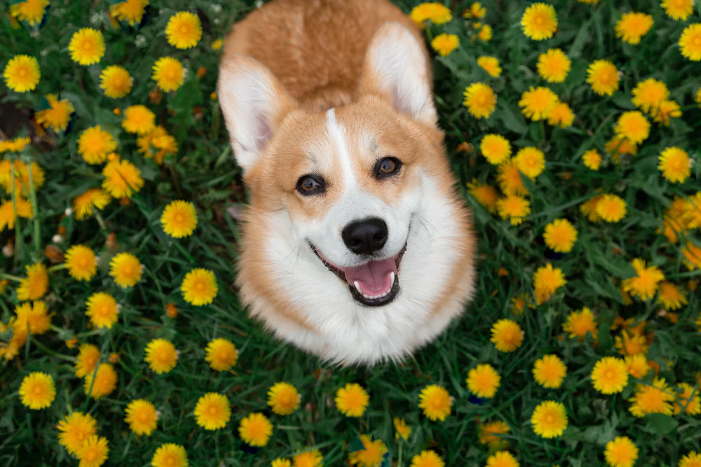
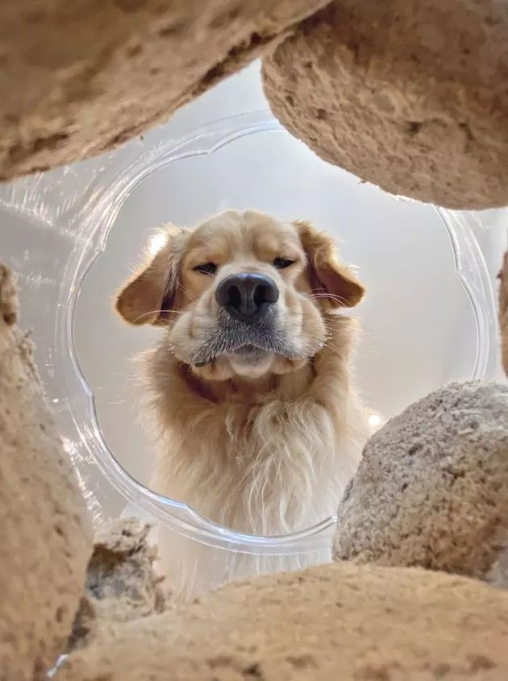

A Site About Some Dogs

How To Dog
Corgis, with their stubby legs and fluffy butts, are the embodiment of canine charm and energy. Originally bred for herding cattle, these little dogs are surprisingly agile and quick despite their small stature. Their playful personalities and love for companionship make them excellent family pets. With their signature “smiling” faces and perky ears, corgis are often the center of attention wherever they go. Whether it’s chasing a ball, herding other pets, or lounging on their back with legs in the air, corgis have a knack for bringing joy to their owners with every wag of their tail.
What Is Dog
The golden retriever sat expectantly, tail wagging furiously as its owner held out a bone-shaped treat. Its nose twitched, taking in the irresistible aroma of peanut butter and bacon. With a soft “Good boy,” the treat was released, and the dog gingerly took it into its mouth before retreating to its favorite spot on the rug. Holding the treat delicately between its paws, it began to crunch enthusiastically, savoring every bite. Tiny crumbs scattered around as its tail thumped against the floor in pure contentment. Once finished, the dog licked its lips and looked up hopefully, ready for round two.
Facts From Dogs

This is my professional headshot